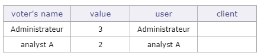
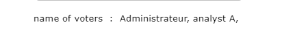

Configuration Management¶
Module Management¶
The Module Management allows to choose the module(s) that will appear in the interface. Each module can be enabled/disabled individually.
This enables or disables a consistent group of features.
Module management screen¶
The menu at the top of the page allows you to display all the modules or to display the modules corresponding to a part of the scope of the project management.
When you have selected one of these menus, the modules are displayed below.
Click on a module to display its description, as well as the list of screens that will be activated or desactivated.
Click on the checkboxes to enable or disable the module.
Warning
Disabling some modules will also hide reports, all related parameters and some fields.
For example, the project and activity expense fields are hidden when the financial/expense module is disabled.
Access rights¶
Profiles¶
The profile is a group of rights. Each with specific access rights to the database.
Thus, each user is linked to a profile which defines the data that he can see and possibly manage.
See also
Profiles screen¶
Value of Field “Name”
The value of field “Name” is not the name displayed, but it is a code in the translation table.
The value of field “Name” must be a significant name and must not contain spaces or special characters.
The name displayed at right of the field is the translated name.
when the new profile is created, it appears in the list of existing profiles in the list box.
It remains between square brackets because it does not exist in Translatable name.
Tip
Ideally, the value of the field should start with “profile” to be easily identified in the translation table.
Profile description with translatable name¶
Field Profile code
You can put the abbreviations you need and they do not have an impact on most profiles.
However, for administrators and project managers, you must respect these codes so that the application recognizes them.
ADM: will designate administrator.
PL: will designate project leader.
Sort order
The sort order is important in profiles because it allows the most important profile to be placed at the top of the drop-down lists.
When a project manager assigns a resource, he can assign a profile to them, starting from his own profile and going down to the lowest one.
sort order with administrator below project leader¶
If the administrator profile is, due to its sort order, below the project manager in the list, in this case, the project manager could assign the administrator profile to any resource on the project in question.
Project manager can assign a resource with the administrator profile¶
Restriction zone
The restriction zone offers two types of restriction:
By type based on ProjeQtOr elements (actions, activities, invoices, catalog …)
By product versions
See also
Access to forms¶
This settings screen allows you to define access to the element screens for each profile.
Users who have access to this screen cannot modify their own screen access rights.
The checkbox is read-only to make sure that at least one profile can always access it.
Only another profile with access to the screen will be able to uncheck this box.
Access to forms screen¶

{kind=link}
Access modes¶
The access mode defines a combination of rights to Created, Read, Update or Delete items.
It’s the CRUD RIGHTS:
Create rights
Read rights
Update rights
Delete rights
Each access is defined as scope of visible and/or updatable, that can be, by kind of elements.
Project dependant¶
By default, ProjeQtOr offers 10 different access modes.
Each access defines the visibility that can be applied by type of elements dependent on a project (activity, ticket, action, …).
You can choose from several levels of visibility for each CRUD entitlement.
No element: No element is visible and updatable.
Own elements: Only the elements created by the user.
Elements he is responsible for: Only the elements the user is responsible for.
Elements of own project: Only the elements of the projects the user/resource is allocated to.
All elements on all projects: All elements, whatever the project.
Value of Field “Name”
The value of field “Name” is not the name displayed, but it is a code in the translation table.
The value of field “Name” must be a significant name and must not contain spaces or special characters.
The name displayed at right of the field is the translated name.
when the new profile is created, it appears in the list of existing profiles in the list box.
It remains between square brackets because it does not exist in translatable name.
Tip
Ideally, the value of the field should start with “accessProfile” to be easily identified in the translation table.
Not project dependant¶
The non-dependent elements of a project, such as organizations, parameters, lists of values, tools or even controls and automatisms can also be set with CRUD rights.
These elements must be visible. So the reading right is granted on a basic basis.
ProjeQtOr offers 5 different access modes where you can define creation, update and deletion rights.
Yes: allows the right to …
No: does not allow the right to …
Own elements: Only the elements created by the user.
Elements he is responsible for: Only the elements the user is responsible for.
You can then define a mode corresponding to the visibility rights that you wish to grant on each profile in the access to data not dependent on the project.
Access to data¶
This screen allows to set element access mode for each profile.
Allows to define scope of visibility and/or updating of data in elements for users and resources.
Project dependant¶
This screen is only for the elements reliant on a project.
For each element, selected the access mode granted to a profile.
Access to data (Project dependant) screen¶
Not project dependant¶
This screen allows to set for each profile, elements access rights.
Allows to grant access rights (read only or write) to users, to data on specific elements.
This screen is only for the elements not reliant on a project.
For each element, select the access rights granted to a profile.
Some features do not have a manager or are not linked specifically to a user profile, like messages, tools or even environmental parameters.
Certain access modes are therefore not offered in the drop-down lists on certain elements of this screen.
Access to reports¶
This screen allows to define report access for each profile. Users belonging to a profile can see the corresponding report in the report list. Reports are grouped by report categories
Document rights per directory¶
You can define the access rights to documents according to the profile at each level of the document directory tree.
By default, all values are initialized for each existing directory from the existing values in the “Project-dependent access to data” rights screen.
Specific access¶
This screen groups specific functionalities options. Users belonging to a profile can have access to the application specific functions. Depending on options of functionality, allows to grant access rights, to define data visibility or to enable or disable option.
For each option, select the access granted to a profile.
Access to resource data
This section allows to:
Defines who will be able to see and update real work for other users.
Defines who can validate work for resource.
Defines who have access on Diary for resources.
Defines who, as a resource, can subscribe to survey for users.
Defines who have access on Reports for resources.
Note
Validate real work: in most cases, it is devoted to project leader.
Work and Cost visibility
This section defines for each profile the scope of visibility of work and cost data on project and activity for example.
Assignment management
This section defines the visibility and the possibility to edit assignments (on activities or else).
Display specific buttons
This section defines whether some button, checklist, job list will be displayed or not (if defined).
Display of combo detail button
This option defines for each profile whether the button
 will be displayed or not, facing every combo list box.
will be displayed or not, facing every combo list box.Through this button, it is possible to select an item and create a new item.
This button may also be hidden depending on access rights (if the user has no read access to corresponding elements).
Multiple update
Defines the possibility or not to change one or more criteria for one or more selected rows at a time
Conditional display
This section allows you to view the voting table in the voting section of the ticket details tab.
Voting tables
The voting table must display the real name of the voters, the number of points awarded to the selected item, their user name and the name of the client to which the user belongs.
Name of voters
If you don’t want to see or display so much detail, you can only display the names of people who voted on this item.
Planning access rights
This section defines access for each profile to planning functionality.
Monthly consolidation of projects
This section defines the right for each profile if it can validate and / or block the allocations of the resources of a project for a defined month.
Unlock items
This section defines for each profile the ability to unlock any document or requirement.
Otherwise, each user can only unlock the documents and requirements locked by himself.
Reports
This section defines for each profile the ability to change the resource parameter in reports.
Financial
This section defines for each profile the possibility of modifying the financial situations or of being able to automatically generate a project expense.
Specific update rights
You determine for each profile whether they have the rights to perform or execute certain features. The mention of “all” refers to the elements of any user.
Can manage all notes.
Can delete all attached files.
Can force delete.
Can delete items with real work
Can force close.
Can update creation information (header of the details area).
Can view components on tickets.
Can update left work (Assignment and/or timesheet).
Can work on tickets
Activation of the assignment breakdown
Can manage votes.
Can impose a layout on other users.
Can create new tags.
Limit visibilty to resources
By profil, allows to restrict or not the number of resources displayed, by organizations or own team, on resource lists.
By profil, allows to restrict or not the number of resources displayed, by organizations or own team, on resource screen.
Limit visibility to organizations
By profil, allows to restrict or not the number of organizations displayed, by organizations or own organization, on organization lists.
By profil, allows to restrict or not the number of organizations displayed, by organizations or own organization, on organization screen.
Audit connections¶
Audit connection proposes a view of “who is online”.
you can know which platform the user has logged on to, his browser and dates of his first and last access, as well as the duration of the connection
Note
The administrator has the possibility to force the disconnection of any user (except his own current connection, see: admin-console.
Translatable name¶
For profiles and access modes, the value of field “Name” is translatable.
The field “Name” in screens Profiles and Access modes is not the name displayed, but it is a code in the translation table.
The name displayed at right of the field is the translated name.
The translated name depends on user language selected in User parameters screen.
Note
If translated name is displayed between square brackets [ ], then the value of field “Name” is not found in the translation table.
Translation table files
In ProjeQtOr, a translation table file is defined for each available language.
The files are named “lang.js” and are localized in a directory named with ISO language code.
Tip
For instance: ../tool/i18n/nls/fr/lang.js.
How to modify the translation file?
You can edit file “lang.js” to add translation of new value or to modify the existing value translation.
Or, you can download Excel file named “lang.xls”, available on ProjeQtOr site. You can modify the translation tables of all languages and produce files “lang.js”.